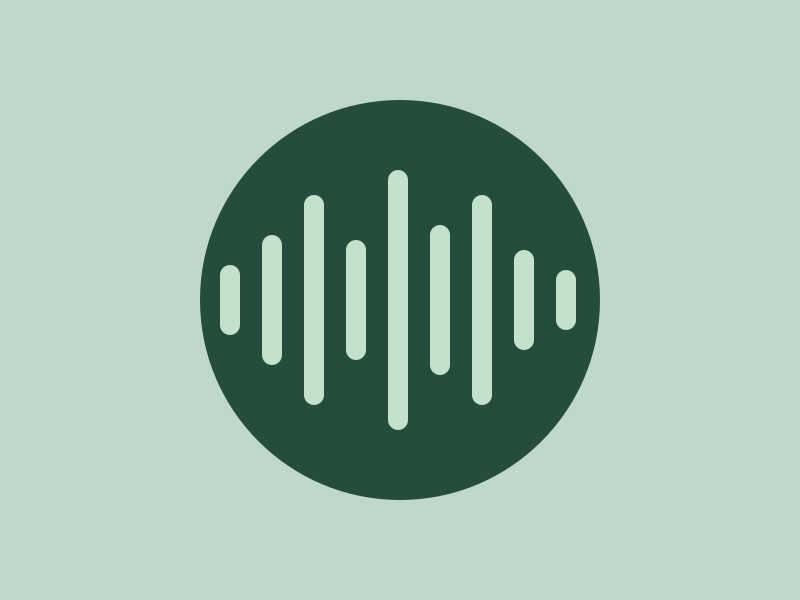

Focus audio
Media play promises, real playback state, seeking, volume and native controls.

Study tones
Original synthesized 12-second practice audio. This is a playback demonstration.
0:00 / 0:12
Ready. Audio starts only after your action.